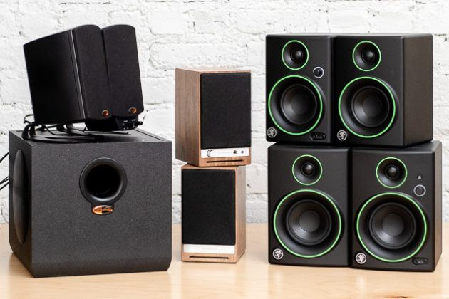
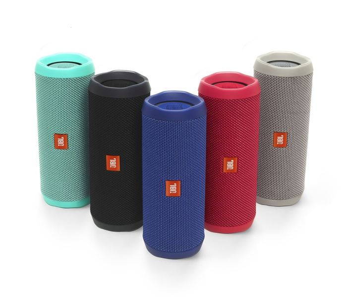

JBL.... best speaker company?
What does JBL even do?
JBL is an American company that manufactures audio equipment, including loudspeakers and headphones. There are two
independent divisions within the company; JBL Consumer produces audio equipment for the consumer home market, while the
JBL Professional produces professional equipment for the studio, installed sound, tour sound, portable sound (production
and DJ), and cinema markets. JBL is owned by Harman International Industries, a subsidiary of South Korean company
Samsung Electronics.

What made JBL so popular?
Over the next two decades, JBL went more mass-market with their consumer (Northridge) line of loudspeakers. At the same
time, they made an entry into the high-end market with their project speakers, consisting of the Everest and K2 lines.
JBL became a prominent supplier to the tour sound industry, their loudspeakers being employed by touring rock acts and
music festivals. JBL products were the basis for the development of THX loudspeaker standard, which resulted in JBL
becoming a popular cinema loudspeaker manufacturer.

Nowadays, with their portable, convenient and high-quality speaker, JBL attracts many young people that buy their products.